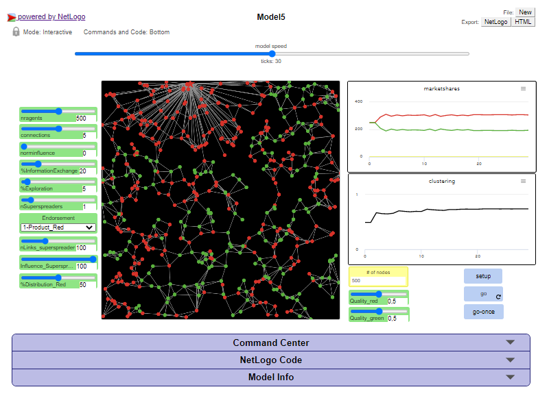

Netlogo models1 (best viewed on desktop)
Model 1 
: Protest - initiators
Model 2
: Protest - threshold level
Model 3
: Protest - initiators and threshold level
Model 1
: Number of fishers
Model 2
: Fish growth
Model 3
: Size of ships
Model 4
: Satisficing versus maximizing fishers
Model 5
: Limitation on number of sea days (Policy 1)
Model 6
: Closing areas (Policy 2)
Model 7
: Policy impact of limited days at sea for satificing versus maximizing fishers
Model 8
: Policy impact of closing areas for satificing versus maximizing fishers
Model 1
: Virus in the tribe
Model 2
: Virus in the tribe with hubs
Model 3
: Virus in the tribe with connectivity of hubs
Model 4
: Information and norms in the tribe
Model 5
: Endorsement
Model 6
: Three products
Model 7
: Small worlds2
Model 1
: Information
Model 2
: Information: Norms
Model 3
: Information: Norm and Habit
Model 3
Ants
References
1 Wilensky, U. (1999). NetLogo. http://ccl.northwestern.edu/netlogo. Center for Connected Learning and Computer-Based Modeling, Northwestern University, Evanston, IL.
2 Wilensky, U. (2015). NetLogo. http://ccl.northwestern.edu/netlogo/models/SmallWorlds. Center for Connected Learning and Computer-Based Modeling, Northwestern University, Evanston, IL.